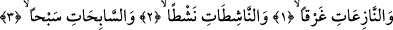
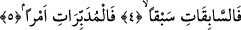

MELEKLERİN GÜCÜ
Bismillâhirrahmânirrahîm
1. Yemin olsun söküp çıkaranlara,
2. Yavaşça çekenlere,
3. Yüzdükçe yüzenlere,
4. Ve yarıştıkça yarışanlara,
5. İş düzenleyenlere.
“Yemin olsun söküp çıkaranlara.” Âyetin başındaki “vav” harfi kasem; yâni yemin
vavıdır. Yemin, üzerine and edilenin şânının büyüklüğüne delâlet eder. Allah Teâlâ,
yarattığı nesnelerden dilediklerinin üstüne bu şeyin büyüklüğüne dikkat çekmek için
yemin edebilir.
Bu âyetin başlangıç kelimesi olan “en-Nâziât” “nâziat” kelimesinin çoğuludur.
Anlamı; söküp çıkaran bir grup melek demektir. Meleklerin sıfatı olan “nâziât”
kelimesinin müennes yapılması, meleklerin müennes bir kelime olan “tâife/zümre”
oluşturmalarından dolayıdır. Bir başka ifâdeyle kelimenin müennes yapılması, müennes
olan tâife anlamının dikkate alınmış olmasından dolayıdır. Daha sonra bu kelime âyette
olduğu üzere “nâziât” şeklinde çoğul yapılmıştır. Bazı âlimlere göre “nâziât” meleklerin
sıfatı değil, çekip çıkaran bir grup melek anlamınadır. Bu âyetin devamındaki “nâşitât,
sâbihât, sâbikât, müdebbirât” ifâdeleri de aynı şekildedir. Kelimenin yapısı hakkında
yukarıda bilgi verirken bunun “tâife” anlamı göz önüne alınarak böyle ifâde edildiğini
söyledik; yoksa dilbilgisi kurallarına göre aslında; “nâziıyn ve nâşitıyn” denilmesi
gerekirdi.
Kelimenin cümle içindeki yapısı ve tahlilinden sonra şimdi anlamı üzerinde duralım.
Nâziât kelimesinin kökü olan nez’ herhangi birşeyi yerinden şiddetle çekmek, sökmek
demektir. Aynı âyetteki “gark” kelimesi masdar olup içerisindeki zâid harfler atılmıştır.
Anlamı zâid harflerle birlikte “iğrak” şeklindedir. İğrak; “boğmak, batırmak; yayı zor ve
kuvvetle çekmek” anlamına gelir. Bunun kökü olan “gark”, suyun dibine ve belâya
dalmak, batmak demektir.
“Garkan” kelimesi, dilbilgisi kurallarına göre Nâziât kelimesinin mef’ûl-i mutlakı
olup o kelimenin ifâde ettiği mânânın bir çeşidini bildirmektedir. Çünkü gark, çekme ve